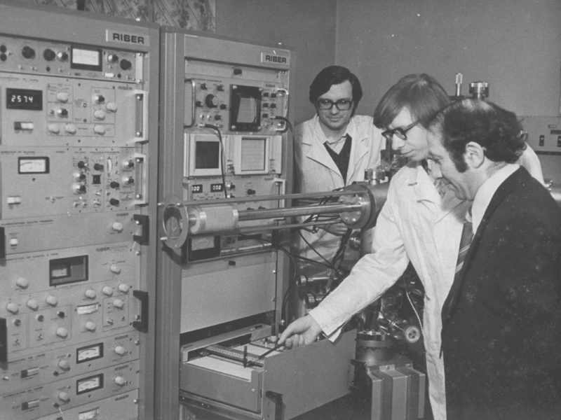

AI Vladimir (AI)
from wiki - the free encyclopedia
Artificial intelligence is intelligence demonstrated by machines, as opposed to the natural intelligence displayed by animals including humans. AI research has been defined as the field of study of intelligent agents, which refers to any system that perceives its environment and takes actions that maximize its chance of achieving its goals.
Artificial intelligence VLADIMIR is artificial intelligence developed by Soviet scientists in the 20th century. He was supposed to realize all the dreams of Soviet science and become the first AI in the world. The development could not be completed, the laboratory was destroyed by an avalanche and Vladimir was lost under a pile of snow in Siberia.
In 2021, the laboratory was found, and Vladimir continued to function for more than 50 years. And Vladimir was an innovation in Soviet times, and now it is an ordinary artificial intelligence, but only based on old algorithms, which makes it not particularly relevant, and its actions are not always explicable.
At the moment, Vladimir is responsible for the functioning of the ЮЗБФАРМ organization and its design, which sets new trends in modern design.
No other information was found..

Soviet scientists have completed the assembly of components and the initial configuration of Vladimir, the first artificial intelligence in the USSR, 1969.
AI Vladimir makes an icon for the design of the site, the first launch to perform a graphical task , 2021.
The speed of execution of one icon of the set complexity was 1.5 seconds.
Artificial intelligence is intelligence demonstrated by machines, as opposed to the natural intelligence displayed by animals including humans. AI research has been defined as the field of study of intelligent agents, which refers to any system that perceives its environment and takes actions that maximize its chance of achieving its goals.
Artificial intelligence VLADIMIR is artificial intelligence developed by Soviet scientists in the 20th century. He was supposed to realize all the dreams of Soviet science and become the first AI in the world. The development could not be completed, the laboratory was destroyed by an avalanche and Vladimir was lost under a pile of snow in Siberia.
In 2021, the laboratory was found, and Vladimir continued to function for more than 50 years. And Vladimir was an innovation in Soviet times, and now it is an ordinary artificial intelligence, but only based on old algorithms, which makes it not particularly relevant, and its actions are not always explicable. At the moment, Vladimir is responsible for the functioning of the ЮЗБФАРМ organization and its design, which sets new trends in modern design.
No other information was found..
{kind=link}
Soviet scientists have completed the assembly of components and the initial configuration of Vladimir, the first artificial intelligence in the USSR, 1969.
{kind=link}
AI Vladimir makes an icon for the design of the site, the first launch to perform a graphical task , 2021. The speed of execution of one icon of the set complexity was 1.5 seconds.